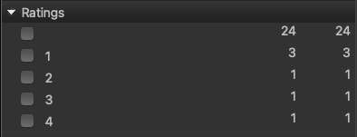
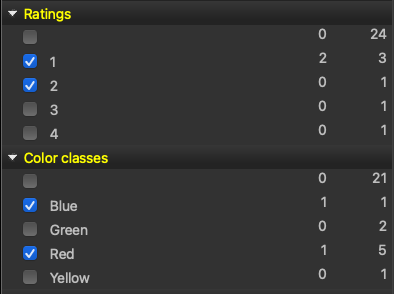

The filter panel has categories that contain items. For example the category Ratings can include the items 1, 2, 3, 4 and 5.
When you select multiple items in a category the filter is OR. In the ratings example, if 1 and 2 were selected then the filter is all images with a rating of 1 or 2.

When you filter on multiple categories the filter is AND. If you also selected the Color Classes red and blue, then the filter will include all images with a rating of 1 or 2 and color class red or blue.

As well as choosing what to include, you can choose what to leave out. Opt+click (Alt+click on Windows) an item to exclude it — it is shown struck through in red. Right-click any item for Include, Exclude and Clear by name. Clicking an excluded item again clears it.
An exclusion always wins. If an image carries an excluded item it is left out whatever else it matches, and that applies across every category, not just within the one you excluded from.
A category holding only exclusions subtracts rather than narrows: excluding the color class red shows everything that is not red, not "nothing, because no image is in the empty set of included colors".
Keywords are flat. A keyword hierarchy such as Location > Canada > BC > Vancouver contributes each of its levels as its own keyword, so filtering on Canada finds everything that was beneath it — there is no tree to open.
The cost is that one name can mean two things. If you keyword both Location > Canada > BC > Vancouver and Location > USA > Washington > Vancouver, there is a single Vancouver keyword covering both cities. Winnow shows such a keyword in amber and lists its parents in the tooltip.
To tell them apart, include the keyword and exclude the parent you do not want: include Vancouver, Opt+click USA. The amber marking needs the catalog; without it Winnow cannot tell which keywords are ambiguous and marks none.